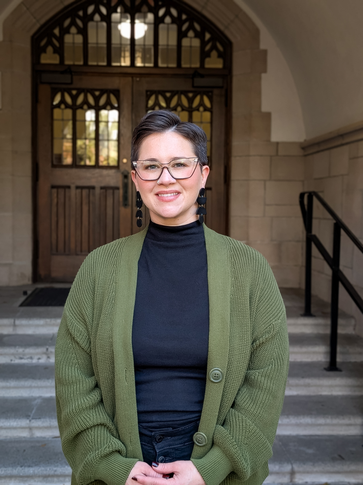

PhD, LMHC | Clinician, Educator, and Scholar
I am a clinician, educator, scholar, and advocate who believes that people deserve care that is honest, courageous, and reaches them where they are. I intentionally occupy the spaces many clinicians find hardest to inhabit. I specialize in intimate partner violence (including work with those who cause harm), high-conflict couples, and complex and personality presentations. I believe that extending healing to those who cause harm is one of the most consequential things therapy can do, and that breaking these cycles requires more than empathy. It demands clinical rigor and radical presence.
Community is equally central to who I am as a professional. I take every opportunity to bring mental health outreach directly into our communities because the knowledge and skills that change lives in the therapy room should not only be available to those who can afford, access, or even have trust in the field.
My research interests sit at the intersection of language, power, and culture. I am particularly interested in how psychological terminology is altered by its circulation through popular and digital discourse, what happens to the meaning of these terms in transit, how that shapes the way people understand themselves and others, and how these shifts in meaning impact both society and our field as a whole. A second line of inquiry runs through power and control across clinical, relational, and systemic contexts, with particular interest in how language functions as a mechanism of power and control, and what this means in both relationships and in systems at large.
How prepared new clinicians feel to work with survivors and perpetrators of intimate partner violence, what shapes that sense of preparedness, and how training programs can better support it.
Patterns of coercion, control, and narcissistic presentation across clinical and subclinical populations in couples therapy contexts.
How psychological terminology is shaped by its circulation through popular and digital discourse, what happens to its meaning in transit, and how that reshapes the way people understand themselves, others, and the field itself, with particular concern for how these shifts create barriers to equitable access, accurate assessment, and effective treatment.
The lived experience of developing clinicians encountering complexity in sessions for the first time, with particular interest in qualitative approaches to understanding trainee identity development and the formative experience of early clinical work with couples and families. Focused on supporting developing clinicians in navigating moments that many struggle with: high conflict and emotional intensity, client withdrawal, infidelity disclosures, and more.
Njue, J. (2025). #WalkingRedFlag: A thematic analysis of Instagram posts discussing unhealthy romantic relationship dynamics. Doctoral dissertation, University of Florida.
Examining the impact of the HEART Model on master's-level counseling students' perceived competence in couples and family counseling. Data collection includes pre/post administration of an adapted Counselor Self-Efficacy Scale and qualitative written reflections from students enrolled in an advanced couples counseling course within a university training clinic.
Chambliss, C., & Edmondson, J. (2020, September). Talking Race & Racial Justice with Children & Youth. BOOST Alliance Conference, online.
Edmondson, J., & Gee, C. (2020, September). Safe Zone Training: How to Successfully Support the LGBTQ+ Youth in Your Program. BOOST Alliance Conference, online.
Schuermann, C., Super, J., & Edmondson, J. (2019, March). The Shared Trauma of School Shootings and Their Impact on Counseling and Education. American Counseling Association Conference, New Orleans, LA.
Note: Publications and presentations prior to 2025 appear under the name Edmondson.
My teaching spans graduate counselor education, doctoral psychology training, and professional development for practicing clinicians. I work to create conditions for critical reflection, skill integration, hands-on engagement, and clinical identity development at every level.
I see teaching as a relational process that demands the same honesty, confrontation of complexity, and cultural accountability I bring into my clinical work. I try to build learning environments where students are not just acquiring skills but actively forming professional identities, where difficult material is not avoided but examined, and where the question we keep returning to is: how does this actually show up in practice, and for whom?
Graduate-level instruction in family systems theory, high-conflict relational dynamics, and couples therapy interventions with experiential learning and applied clinical integration.
Supported graduate instruction through classroom facilitation, case-based learning, and formative student feedback.
Transition seminar for first-generation, low-income, and historically marginalized undergraduates addressing academic self-efficacy, identity, and institutional navigation.
12-part annual seminar series for doctoral practicum students covering culturally responsive frameworks and identity-conscious case conceptualization.
3-part annual seminar series for postdoctoral residents and doctoral interns on affirmative clinical frameworks and identity-affirming assessment.
My approach is honest and relational. I name what goes unnamed, ask the questions that are hardest to ask, and stay with what comes up. For many clients, that kind of presence is what genuine care and support look like. It's also important to me to bring clinical work beyond the therapy room and into the community because access and trust are not simply logistical problems, they are clinical ones.
SpecialtiesSupervise doctoral interns, counseling interns, and postdoctoral residents at UF CWC. Ongoing consultation on IPV, high-conflict couples, and DV risk assessment.
Live and video-based supervision of master's-level students providing couples and family therapy. Real-time supervisory feedback during sessions with community clients.
Supervision and consultation across master's, doctoral, and postdoctoral training levels spanning individual, group, and crisis modalities.
Supervised interns and residents in acute mental health response. Real-time consultation on risk assessment, safety planning, and ethical decision-making.
Oversee intake, referrals, and access coordination for couples therapy services. Develop and implement clinical policy. Provide individual and group supervision focused on couples work.
Designated clinical consultant to UFPD for students navigating stalking and physical violence. Risk and threat assessment consultation with cross-system care coordination.
Elected to seven-member shared governance body overseeing faculty professional leave, merit eligibility, and peer evaluation. Contributing to bylaw development.
For academic inquiries including speaking invitations, consultation requests, training collaborations, or position inquiries, please reach out by email. I welcome connection with colleagues across counselor education, clinical psychology, and community mental health.
For supervision or clinical consultation inquiries, please include your training level and the nature of your question.
Send a Message